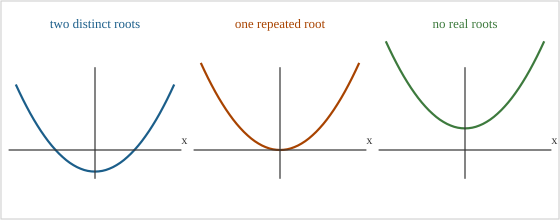

<script src="/assets/redirect.js"></script>
<section class="theory" data-section="P1-1.8">
<h2>1.8 The number of roots of a quadratic equation</h2>
<p class="src">Based on Cambridge International AS &amp; A Level Mathematics: Pure Mathematics 1 Coursebook (Hugh Neill, Douglas Quadling and Julian Gilbey), Chapter 1 Quadratics, printed pp.24–26 (the discriminant, Key point 1.5, and Worked examples 1.17–1.19 style). Printed pages were read from P1.pdf (printed 24–26 = PDF 36–38). Own wording and new numbers.</p>
<p class="key-words"><strong>Key words:</strong> <em>discriminant</em>, <em>repeated root</em></p>
<h3>The discriminant</h3>
<p>For the quadratic equation \(ax^2+bx+c=0\), with \(a\neq 0\), the quantity \(b^2-4ac\) is called the <strong>discriminant</strong>. Its sign tells us how many real roots the equation has, without solving it:</p>
<ul>
<li>if \(b^2-4ac&gt;0\), there are two distinct real roots;</li>
<li>if \(b^2-4ac=0\), there is one <strong>repeated root</strong> (two equal real roots);</li>
<li>if \(b^2-4ac&lt;0\), there are no real roots.</li>
</ul>
<figure><figcaption>The three cases: two distinct real roots, one repeated root, and no real roots.</figcaption></figure>
<div class="worked-example">
<h4>Worked example 1</h4>
<p class="src">Book: Worked example 1.17 style, printed p.25. New numbers.</p>
<p>Find the discriminant of \(x^2-8x+7=0\) and state the number of real roots.</p>
<ol class="steps">
<li>Here \(a=1\), \(b=-8\) and \(c=7\), so \(b^2-4ac=64-28=36\). <span class="mark">M1</span></li>
<li>The discriminant is positive, so there are two distinct real roots. <span class="mark">A1</span></li>
</ol>
<p class="final"><strong>Answer:</strong> discriminant \(36\); two distinct real roots</p>
</div>
<div class="worked-example">
<h4>Worked example 2</h4>
<p class="src">Book: Worked example 1.18 style, printed p.25. New numbers.</p>
<p>Find the value of \(k\) for which \(x^2-8x+k=0\) has a repeated root.</p>
<ol class="steps">
<li>The discriminant is \(64-4k\). For a repeated root this is zero, so \(4k=64\) and \(k=16\). <span class="mark">A1</span></li>
</ol>
<p class="final"><strong>Answer:</strong> \(k=16\)</p>
</div>
<h3>Common mistakes</h3>
<ul>
<li>Using \(b^2+4ac\), or forgetting that \(b\) is already negative when it is squared.</li>
<li>Stating “two roots” when the discriminant is zero: there is a repeated root, not two different values.</li>
<li>Solving the equation when the question only asks for the number of roots, or for the values of a parameter that produce a given number of roots.</li>
</ul>
<h3>Quick checks</h3>
<div class="quick-check">
<h4>Quick check 1</h4>
<p>What is the discriminant of \(x^2-8x+7=0\)?</p>
<details><summary>Worked solution</summary>
<ol class="steps">
<li>\((-8)^2-4\times 1\times 7=36\). <span class="mark">A1</span></li>
</ol>
<p class="final"><strong>Answer:</strong> \(36\)</p>
</details>
</div>
<div class="quick-check">
<h4>Quick check 2</h4>
<p>Find the value of \(k\) for which \(x^2-8x+k=0\) has a repeated root.</p>
<details><summary>Worked solution</summary>
<ol class="steps">
<li>\(64-4k=0\), so \(k=16\). <span class="mark">A1</span></li>
</ol>
<p class="final"><strong>Answer:</strong> \(16\)</p>
</details>
</div>
<div class="quick-check">
<h4>Quick check 3</h4>
<p>The equation \(x^2+kx+9=0\) has a repeated root. What is the positive value of \(k\)?</p>
<details><summary>Worked solution</summary>
<ol class="steps">
<li>\(k^2-36=0\), so \(k=\pm 6\). The positive value is \(6\). <span class="mark">A1</span></li>
</ol>
<p class="final"><strong>Answer:</strong> \(6\)</p>
</details>
</div>
<p class="marks-key"><strong>Marks:</strong> M = method, A = accurate answer (depends on M), B = independent mark. Leave exact values exact.</p>
</section>
